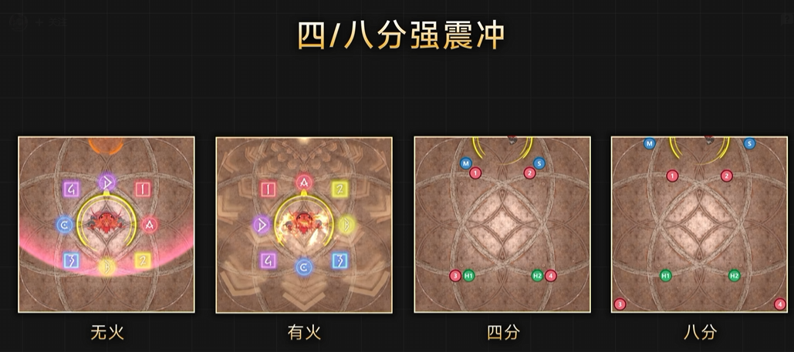
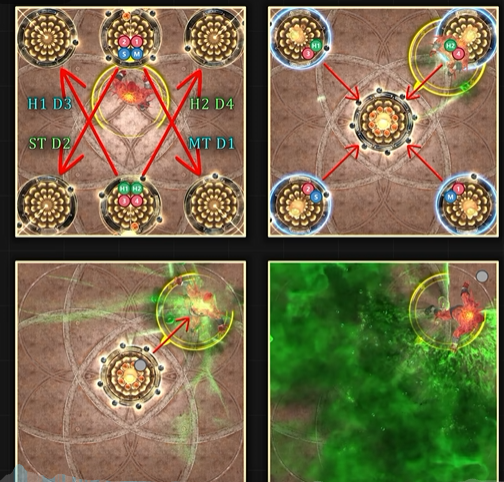
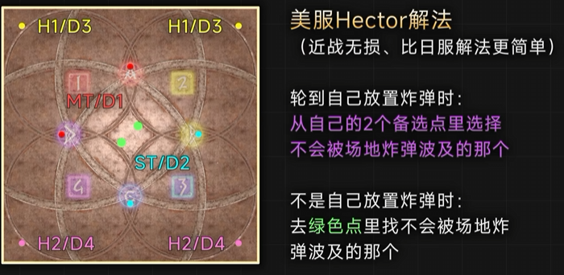
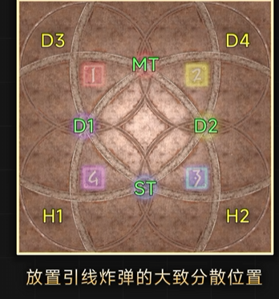

【阿卡迪亞零式】輕量級三層 野蠻炸彈
關卡簡稱：M3S | Boss：野蠻炸彈
野蠻碎擊
物理屬性的全體AOE。多次的分段攻擊，喝藥之後分段次數會增加。開場沒有喝藥，AOE次數是4次。
拳面猛擊
點名1仇的的坦克分攤死刑。同樣是多段攻擊，喝藥後的攻擊次數一樣會增加。開場沒有喝藥因此次數是4次。
在第二次喝藥之前，使用足夠的防禦buff可以讓MT一個人吃下傷害，向上方動畫一樣能獨自一人承傷。
▼ 第二次喝藥之後的傷害非常高，因此推薦無敵
第二次喝藥之後的拳面猛擊次數來到8次，傷害非常高，因此推薦無敵吃。第二次喝藥後總共有兩次拳面猛擊，因此MTST可以各無敵一次。
4分 or 8分雙重金臂鉤
◯◯雙重金臂鉤會在BOSS自身中心發動鋼鐵的同時進行扇形攻擊。4分是雙人分攤，8分則是8方散開，在稍微遠離BOSS的情況下處理分攤散開。 ▼ 4分的扇形範圍非常細因此請兩人重疊 4分的分攤扇形非常細長，因此讓兩人重疊吧。位子稍微偏差，只讓一個人分攤的話便會死去，請多注意。 ▼ 按照4分的散開位置調整巨集 雖然本攻略的4分解法為X字，但只要不和其他分攤重疊的話想要十字或怎麼樣的形狀站都可以。

4分 or 8分強震衝
BOSS面對跳躍方向使出距離衰減攻擊，之後會接4分的分攤，或是8分的散開。4分為2人1組的分攤，8分的話8人便散開別讓位子重疊。 包含坦克在內的近戰直接，為了方便處理機制與輸出，在距離衰減後直接突進靠近BOSS便可. ▼ 注意 8分的場合時近戰組空間略為狹窄 8分的場合，在BOSS腳下的近戰組散開空間較為擁擠，注意不要重疊導致死亡。近戰突進之後稍微往左右移動確保安全。
野蠻爆炸 → 致命毒霧
最初會在南北或東西各生成三座擊退塔。在三座塔裡中間那座會最先發動，近戰組踩北西、遠程組踩南東的塔。踩塔時會從塔中心擊退玩家，因此面向場中MTD1/H1D3向左、STD3/H2D4向右站位。 飛往自己負責的方向後，要再次利用雙人塔飛回場中。另外，此時BOSS會隨機往四角移動，得利用場中的塔移動。最後在BOSS背後的安區躲避致命毒霧。

注藥
BOSS往場中移動，注藥後各所有攻擊都會被強化。注藥沒有傷害，純粹的演出技能，因此請別在意繼續輸出。
注藥之後追加的攻擊模式。詠唱時若BOSS手腕被火纏繞的話便是月環，沒有火則是鋼鐵。4分與8分的分攤散開沒有變化。 另外喝藥後直接發動的4分或8分雙重金臂鉤BOSS一定會被火纏繞，可以直接認定為月環，之後為隨機。
喝藥完在詠唱◯◯強震衝時，若BOSS的雙手被火焰纏繞的話，會從面對方向的場邊使用擊退攻擊；沒被火焰纏繞的話便是距離衰減。4分是2人分攤、8重是散開的這點沒有變化。親疏自行或沉穩詠唱有效，因此推薦使用。 如果沒有使用防擊退的話，要注意被擊退的方向，以免被擊退到場外。 喝藥之後第一次使用的4分or8分強震衝，BOSS必定使用擊退，之後為隨機。
野蠻碎擊
本次野蠻碎擊因注藥強化後，攻擊次數增加到6次。和注藥前相比傷害大幅提升，因此請使用減傷與護盾來抵禦傷害。
拳面猛擊
注藥之後，雙坦分攤死刑的拳面猛擊攻擊次數增加到6次。此階段還是MT可1人承受的傷害量。
組隊戰 + 鎖鏈生死戰 + 金臂鉤連擊
組隊戰BOSS會召喚2隻分身。之後鎖鏈生死戰會將玩家和其中一隻分身牽鎖鏈，分身會使出金臂鉤連擊進行半場攻擊。玩家必須吃到連線分身的第一次攻擊，因此必須在躲避沒連線分身的攻擊時，吃下連線分身的攻擊。 此之後，分身會再次使用金臂鉤連擊，這次必須兩邊都迴避。第二次金臂鉤連擊的安區，在第一次安區的對角，所以需要在第一次處理機制時就確認第二次安區。
零式引信炸彈
場上出現8隻炸彈怪，會先從短引信的炸彈怪引爆，之後才是長的。玩家頭上也會依坦補或DPS分別出現長或短的引信，同樣先短的爆炸再來是長的。 長引信較晚引爆的關係，我們要在長引信炸彈的地方處理玩家的短引信。之後再去短引信炸彈的地方處理長引信玩家的爆炸。沒有處理引信的玩家則在中央附近待機。

引信區域 + 野蠻火焰
引信區域會在場中生成踩入會即死的區域，在周圍生成的引信燒到中央區域後便會團滅。引信的火被玩家踩了之後便會熄滅，debuff倒數25秒的人負責短引信，倒數44秒的人負責長引信，依序熄滅引信。 尋找負責的引信，按照優先度坦補組MT>ST>H1>H2、DPS組D1>D2>D3>D4，從A點開始順時針尋找。例如，H1在圖上範例的引信與buff的場合，是從A順時針找第三條短導火線，因此是南東的那條。
▼ HP回滿後再踩引信
每次踩火處理引信時都會被賦予易傷debuff。在HP沒有回滿又有易傷的狀態下，繼續踩下一條引信必定會團滅，因此務必等HP回滿且易傷結束後再繼續處理。
4分 or 8分超豪華野蠻大亂擊
包含最後的分攤散開總共物理屬性10連攻擊。最後會從中央擊退玩家分攤散開。 流程為全體物理五連→鋼鐵→身位圈內安全月環→全體物理AOE→從場外俯衝攻擊擊退玩家→4分或8分衝擊。特別注意第6~7下及最後的擊退、擊退後的衝擊攻擊。 另外，擊退前記得移動到四角的位子，往十字方向擊退的話會飛出場外。
引信炸彈 + 組隊戰 + 鎖鏈生死戰
一邊躲避將爆炸的炸彈怪，一邊處理BOSS與兩隻分身的鎖鏈生死戰的複合機制。全員都必須吃到BOSS的致命毒物，因此必須站在BOSS 270度的毒物攻擊範圍內能同時吃到連線分身的第一發碎頸的位子。這次分身一樣會打兩次，往第一次碎頸安區的對角躲避第二次。
設置引信 + 超華麗野蠻旋火
設置引信為賦予4人長引信、4人短引信，躲避迴轉的扇形與鋼鐵月環的預兆的機制。此解法不需要確認自己的引信長短，可以先專心躲避超華麗野蠻旋火。 躲避旋火之後迅速移動到自己的基本散開位置的標點，之後在標點附近微調躲避攻擊預兆。玩家各自在在標點附近移動躲避預兆，將會自然而然地處理掉引信。

野蠻爆炸 + 金臂鉤連擊
前半的野蠻爆炸最後接續的是270度的致命毒霧，在後半最後則變為金臂鉤連擊。金臂鉤連擊為連續兩次BOSS手腕發光的方向的半場攻擊。因此要從野蠻爆炸最後的中央擊退塔斜飛到半場刀的安區躲避。 躲避第一次半場後，馬上確認場外BOSS的手腕判斷第二次的安區。第二次不一定會打第一次的反方向，可能會有連續兩次都在同一邊的場合，因此請務必觀察BOSS的手腕。
究極超豪華野蠻大亂擊
時間切。但是詠唱完並不會馬上結束，同超豪華野蠻大亂擊，使出5連全體攻擊→鋼鐵→月環之後時間切。詠唱完大約還有15秒的攻擊時間，請別放棄持續輸出到最後吧。